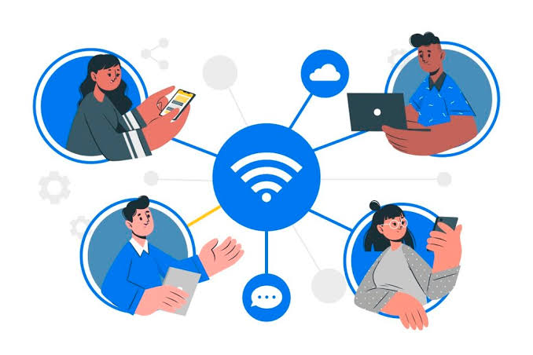

Profil Perusahaan
Kami sadar bahwa perusahaan memerlukan pemasaran yang sangat luar, dengan hadirnya profil perusahaan memudahkan perusahaan untuk memberikan informasi ke khalayak umum

Kami sadar bahwa perusahaan memerlukan pemasaran yang sangat luar, dengan hadirnya profil perusahaan memudahkan perusahaan untuk memberikan informasi ke khalayak umum
Kami adalah mitra digital terpercaya yang fokus menghadirkan solusi website profesional, modern, dan berkinerja tinggi. Kami memahami bahwa website bukan sekadar kartu nama digital, melainkan alat investasi strategis untuk memperluas jangkauan pasar, meningkatkan kredibilitas, dan melipatgandakan penjualan bisnis Anda.
Kami adalah tim pengembang dan desainer website profesional yang berdedikasi membantu pelaku usaha, UMKM, hingga perusahaan besar membangun ruang digital yang berdampak. Berawal dari visi untuk menyederhanakan proses digitalisasi, kami hadir menawarkan layanan pembuatan website yang tidak hanya estetik, tetapi juga fungsional dan berorientasi pada hasil nyata.Setiap baris kode yang kami susun dan setiap piksel yang kami desain bertujuan untuk satu hal: memastikan bisnis Anda tampil menonjol, dipercaya oleh pelanggan, dan siap bersaing di era digital. Kami percaya bahwa website yang baik adalah website yang mampu mengubah pengunjung biasa menjadi pelanggan setia.
Punya ide luar biasa atau butuh konsultasi mengenai website yang cocok untuk bisnis Anda? Tim kami siap mendengarkan dan memberikan solusi terbaik. Hubungi kami melalui saluran di bawah ini untuk konsultasi gratis tanpa komitmen.
Email Resmi: makeweb@gmail.com
WhatsApp Chat: 0812345678910
Jam Operasional: Senin - Jumat, pukul 09.00 - 17.00 WIB